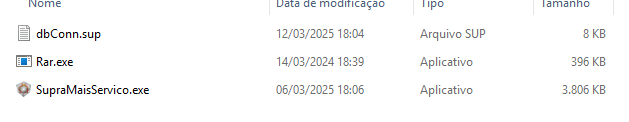
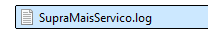

Conceito
- O que é? Serviço instalado no Windows para realizar o backup dos bancos de dados dos clientes (também utilizado para rotinas automatizadas do SupraMAIS).
- Quem cria? É criado no ato da execução do atualizador de versão (ideal no mesmo servidor da pasta
SupraSGC). - Onde habilita? Nos serviços do Windows.
- Onde ficam? Serviços do Windows (iniciar/parar/reiniciar) — nome: Agente do SupraMAIS.
- Como funciona? Rotina diária que verifica o horário configurado e executa o backup.
O que é preciso para o backup ser realizado?
Na pasta SupraSGC deve existir:
SupraMaisServico.exe(executável do serviço)dbConn.sup(configurado com o nome dos bancos)Rar.exe(para compactação do backup)

Curiosidades sobre o serviço do agente
- Não criar nome das empresas com espaço. Use
_ou-(ex.:empresa_xxxouempresa-xxx). Espaços podem afetar a compactação e impedir o backup; se houver mais de uma empresa, se não finalizar uma não inicia a outra. - Existe um log que registra o backup e, em alguns casos, o motivo do backup não ser feito (arquivo TXT na pasta
SupraSGC). - O agente cria primeiro o
.bak(backup), depois compacta para.rare apaga o.bak.
